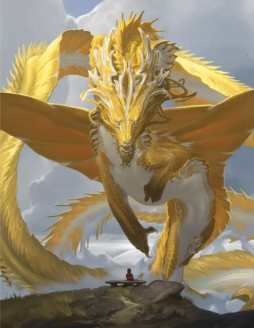

Древний золотой дракон
Ancient Gold Dragon
Громадный Дракон (Металлический), Принципиальный Добрый

Класс Защиты 22 Инициатива +16 (26)
Хиты 546 (28к20 + 252)
Скорость 40 футов, Плавания 40 футов, Полёта 80 футов
| мод | спас | ||
|---|---|---|---|
| СИЛ | 30 | +10 | +10 |
| ЛОВ | 14 | +2 | +9 |
| ТЕЛ | 29 | +9 | +9 |
| мод | спас | ||
|---|---|---|---|
| ИНТ | 18 | +4 | +4 |
| МДР | 17 | +3 | +10 |
| ХАР | 28 | +9 | +9 |
Иммунитеты Огонь
Чувства Тёмное зрение 120 футов, пассивное Восприятие 27, Слепое зрение 60 футов
Языки Общий, Драконий
Опасность 24 (62 000 опыта или 75 000 опыта в Логове; БВ +7)
Особенности
Амфибия. Дракон может дышать как воздухом, так и под водой.
Легендарное сопротивление (4/день, или 5/день в Логове). Если дракон проваливает спасбросок, он вместо этого может в нём преуспеть.
Действия
Мультиатака. Дракон совершает три атаки Раздиранием. Он может заменить одну из этих атак использованием (А) Сотворения заклинаний (Направляющий снаряд, версия 4-го уровня) или (Б) Ослабляющего дыхания.
Раздирание. Бросок рукопашной атаки: +17, досягаемость 15 фт. Попадание: 19 (2к8 + 10) Рубящего урона плюс 9 (2к8) урона Огнём.
Огненное дыхание (Перезарядка 5–6). Спасбросок Ловкости: Сл 24, каждое существо в 90-футовом Конусе. Провал: 71 (13к10) урона Огнём. Успех: Только половина урона.
Сотворение заклинаний. Дракон сотворяет одно из следующих заклинаний, не нуждаясь в Материальных компонентах (заклинательная характеристика — Харизма, Сл спасброска заклинаний 24, +16 к попаданию атак заклинаний):
Неограниченно: Направляющий снаряд, версия 4-го уровня, Обнаружение магии, Преображение, Временных хитов, Концентрации, Временные хиты
1/день каждое: Небесный огонь, версия 6-го уровня, Область истины, Слово возврата
Ослабляющее дыхание. Спасбросок Силы: Сл 24, ккаждое ещё не подверженное этому эффекту существо в 90-футовом Конусе. Провал: Цель получает Помеху на Тесты к20, связанных с Силой, и вычитает 5 (1к10) из своих бросков урона. Она повторяет спасбросок в конце каждого своего хода, оканчивая этот эффект при успехе. Спустя 1 минуту она автоматически преуспевает в спасброске.
Легендарные действия
У этого существа есть 3 использования Легендарных действий (или 4 использования в его Логове); оно может немедленно после окончания хода другого существа потратить одно использование, чтобы совершить одно из следующих действий. Существо восполняет все потраченные использования в начале каждого своего хода.
Изгнание. Спасбросок Харизмы: Сл 24, одно видимое драконом существо в 120 футах. Провал: 24 (7к6) Силового урона; цель Недееспособна и перемещается на безопасный демиплан до начала следующего хода дракона, а затем вновь появляется в незанятом пространстве по выбору дракона в пределах 120 футов от него. Провал или успех: Дракон не может совершить это действие повторно до начала своего следующего хода.
Направляющий свет. Дракон использует Сотворение заклинаний (Направляющий снаряд, версия 4-го уровня).
Наскок. Дракон перемещается на расстояние вплоть до половины своей Скорости и совершает одну атаку Раздиранием.
Бонус мастерства +7
Среда обитания Леса, Луга
Сокровища Магические
Золотые драконы
Драконы надежды и величия
Золотые драконы делают всё возможное, чтобы мир стал лучше. Самые величественные и могущественные из металлических драконов, они стремятся защитить всё доброе и привести мир к светлому будущему. Несмотря на своё добродушие, они всегда готовы вступить в сражение и воспользоваться ослепительным пламенем или ослабляющей магией для победы над врагами.
Золотые драконы любят степи и девственные леса, часто селятся рядом с великолепными памятниками природы или берут под защиту монументы древних цивилизаций. В своих логовах они не только собирают монеты и самоцветы, но и тратят эти богатства для достижения величайших целей, например на покупку редких исторических книг, оплату услуг осведомителей или помощь искателям приключений с возвышенными идеалами.
Древние золотые драконы — мудрые и загадочные создания. Многие из них помогают добродетельным группам, тайно руководят их действиями или оказывают им покровительство издалека.
Лишь когда ставки становятся слишком высоки, они показываются во всём своём великолепии.
Логова золотых драконов
Золотым драконам нравится селиться рядом с источниками природных или магических чудес.
Местность, в которой находится логово взрослого или древнего золотого дракона, изменяется из-за его присутствия, что создаёт следующие эффекты:
• Вестник снов. Пока дракон находится в логове, он может творить заклинание Грёзы, не нуждаясь в Материальных компонентах (заклинательная характеристика — Харизма). При сотворении заклинания таким образом дракон может выбрать целью любое существо в пределах 6 миль.
• Предвещающий туман. Область в пределах 1 мили от логова окутывает переливчатый туман. Видимость в этой области Слабо заслонена. Находящихся в этой области существ невозможно застигнуть врасплох, так как туман предупреждает их об опасности, создавая угрожающие силуэты.
Если дракон умирает или перемещает своё логово в другое место, все эти эффекты мгновенно исчезают.